Fitting point-spread function models
Least-squares methods
To approximate the data with a point-spread function, least-squares methods [4, 1, 5] are employed to minimize the sum of (weighted) squared residuals defined by
| 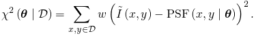 | (1) |
Here the residual value for the  data point is
defined as the difference between the observed image intensity 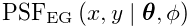
and the value approximated by the 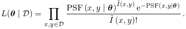,
where
data point is
defined as the difference between the observed image intensity 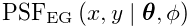
and the value approximated by the 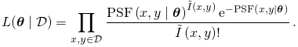,
where  are the PSF parameters. The residual
value can be further weighted by 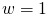, making all measurements equally
significant, or weighted by 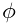, which
takes into account the uncertainty in the number of detected photons.
are the PSF parameters. The residual
value can be further weighted by 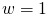, making all measurements equally
significant, or weighted by 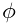, which
takes into account the uncertainty in the number of detected photons.
The search for parameters 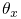 which minimize 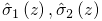, leads to an optimization problem formulated as
| 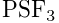 | (2) |
which we solve by the Levenberg-Marquardt algorithm as
implemented in the Apache Commons Math library [2].
The starting point for the optimization process is computed from the
data as the difference between the maximum and the minimum intensity
values for the molecular intensity  , and as the minimum
intensity value for the background offset
, and as the minimum
intensity value for the background offset  . Users have
to choose the starting point for the approximate molecular width
. Users have
to choose the starting point for the approximate molecular width  .
The sub-pixel refinement of the coordinates is obtained as 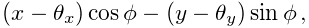
and 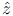, where 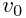.
.
The sub-pixel refinement of the coordinates is obtained as 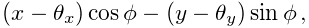
and 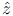, where 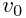.
Maximum-likelihood estimation
This approach assumes that the number of photons collected by a single camera pixel follows the Poisson distribution. Thus, the probability of 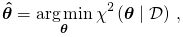 photons arriving at a camera pixel, where the expected number of photons is 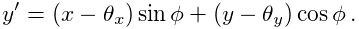, is given by
| 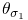 | (3) |
Suppose that samples are drawn independently from the Poisson distribution,
with the expected photon count 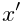
given by the point-spread function model, and the observed photon
count 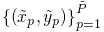 given by the image intensity
expressed in photons. The likelihood [4, 5, 7, 3]
of the parameters  can be modeled as
can be modeled as
| 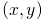 | (4) |
The maximum likelihood estimate of the parameters  is, by definition, the value that maximizes the likelihood 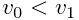.
Intuitively, the estimate corresponds
to the value
is, by definition, the value that maximizes the likelihood 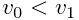.
Intuitively, the estimate corresponds
to the value  that best agrees with the data.
The maximization problem has the form
that best agrees with the data.
The maximization problem has the form
| 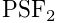 | (5) |
which we solve by the Nelder-Mead method [6]. The starting
point for the optimization process is computed from the data as the
difference between the maximum and the minimum intensity values for
the molecular intensity  , and as the minimum intensity
value for the background offset
, and as the minimum intensity
value for the background offset  . Users have to choose
the starting point for the approximate molecular width
. Users have to choose
the starting point for the approximate molecular width  .
The sub-pixel refinement of the coordinates is obtained as
and , where .
.
The sub-pixel refinement of the coordinates is obtained as
and , where .
Constraining parameters of PSF models
The Levenberg-Marquardt algorithm and the Nelder-Mead method used
above search for values of the parameters  over
an infinite interval. The optimization process can therefore converge
to a solution with negative values which is impossible for variables
corresponding to image intensity or to the standard deviation of a
Gaussian PSF. We therefore limit the interval of possible values by
transforming the relevant parameters and using 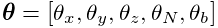
in Equations (2) and (5) instead of .
The transformation for a 2D Gaussian PSF model is 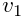.
The optimization process is still unconstrained but will result in
positive PSF parameters. Such a transformation also improves the
stability of the fit.
over
an infinite interval. The optimization process can therefore converge
to a solution with negative values which is impossible for variables
corresponding to image intensity or to the standard deviation of a
Gaussian PSF. We therefore limit the interval of possible values by
transforming the relevant parameters and using 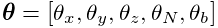
in Equations (2) and (5) instead of .
The transformation for a 2D Gaussian PSF model is 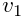.
The optimization process is still unconstrained but will result in
positive PSF parameters. Such a transformation also improves the
stability of the fit.
Guidelines for the choice of parameters
Fitting PSF models by maximum likelihood estimation generally gives slightly better results than fitting by least square methods, particularly when the photon counts are low. Maximum likelihood estimation requires correct setup of the camera parameters (photoelectrons per A/D count and the digitizer offset level). The recommended PSF model, which generally works well, is the integrated Gaussian. The initial size of sigma can be found by running ThunderSTORM on few images of the data sequence. A histogram of the fitted sizes of sigma (in pixels) can help to find the initial value. The size of the fitting radius should be an integer number close to 3*sigma.
References
- [1] (2003) Data reduction and error analysis for the physical science. McGraw-Hill Higher Education, McGraw-Hill. External Links: ISBN 9780072472271 Cited by: Least-squares methods.
- [2] (2013-04) The Apache Commons Mathematics Library; version 3.2. External Links: Link Cited by: Least-squares methods.
- [3] (2011) Simultaneous multiple-emitter fitting for single molecule super-resolution imaging. Biomedical Optics Express 2 (5), pp. 1377–93. External Links: Document Cited by: Maximum-likelihood estimation.
- [4] (1979) The Advanced Theory of Statistics. London: Charles Griffin. Cited by: Least-squares methods, Maximum-likelihood estimation.
- [5] (2010) Optimized localization analysis for single-molecule tracking and super-resolution microscopy. Nature Methods 7 (5), pp. 377–381. External Links: Document Cited by: Least-squares methods, Maximum-likelihood estimation.
- [6] (1971) Algorithm AS 47–function minimization using a simplex procedure. Applied Statistics 20, pp. 338–45. External Links: Link Cited by: Maximum-likelihood estimation.
- [7] (2010) Fast, single-molecule localization that achieves theoretically minimum uncertainty. Nature Methods 7 (5), pp. 373–5. External Links: Document, ISSN 1548-7105 Cited by: Maximum-likelihood estimation.
![[LOGO]]()